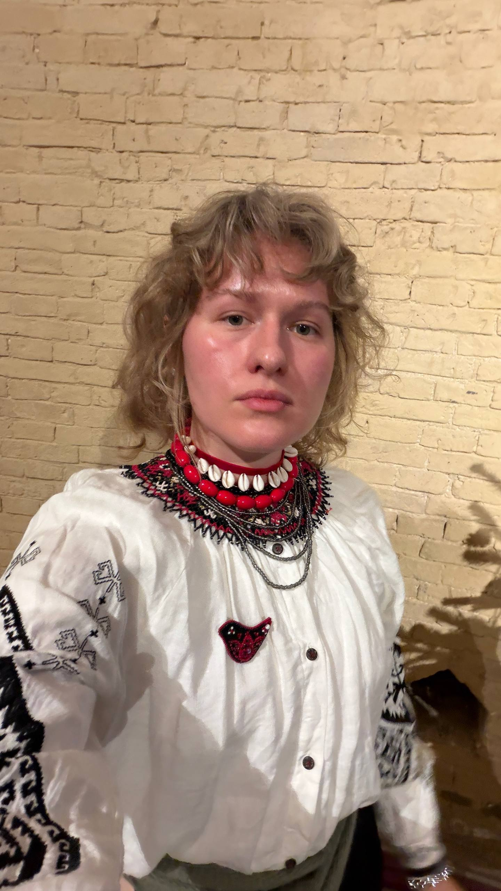

Резюме
Харсун Анастасія Олександрівна

Future JS Developer
QA Engineer | 5+ років досвіду
Manual / Functional testing | Bug reporting |
Київ.
Досвід роботи:
- 2021 - до сьогодні, QA Software Engineer, Dataart
- 2019 - 2021, Support Manager, Dataart
Освіта:
- 2017-2019, Магістр, Менеджер з управління бізнес процесами
- 2013-2017, Бакалавр, Перекладач англійської та іспанської мов
Навички
- Manual testing (web & moblie)
- Functional, Regression, Smoke, Sanity testing
- Test case design & test documentation
- Bug reporting & defect lifecycle management
- Requirements analysis
- SDLC / STLC understanding
- Exploratory testing
- Cross-browser & cross-platform testing
Інструменти
- Jira / Confluence, Azure DevOps
- TestRail
- Postman (API testing)
- JMeter
- Swagger
Linkedin link
whatalaugh11@gmail.com
+38 (093) 035 8718
EN Version